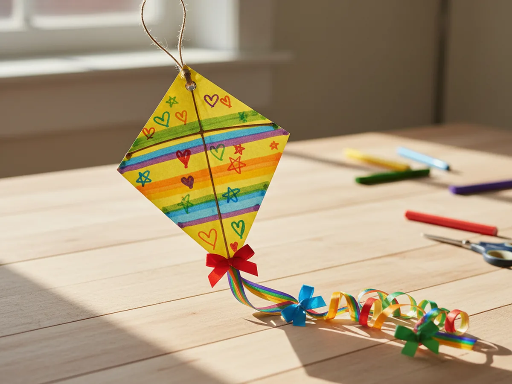
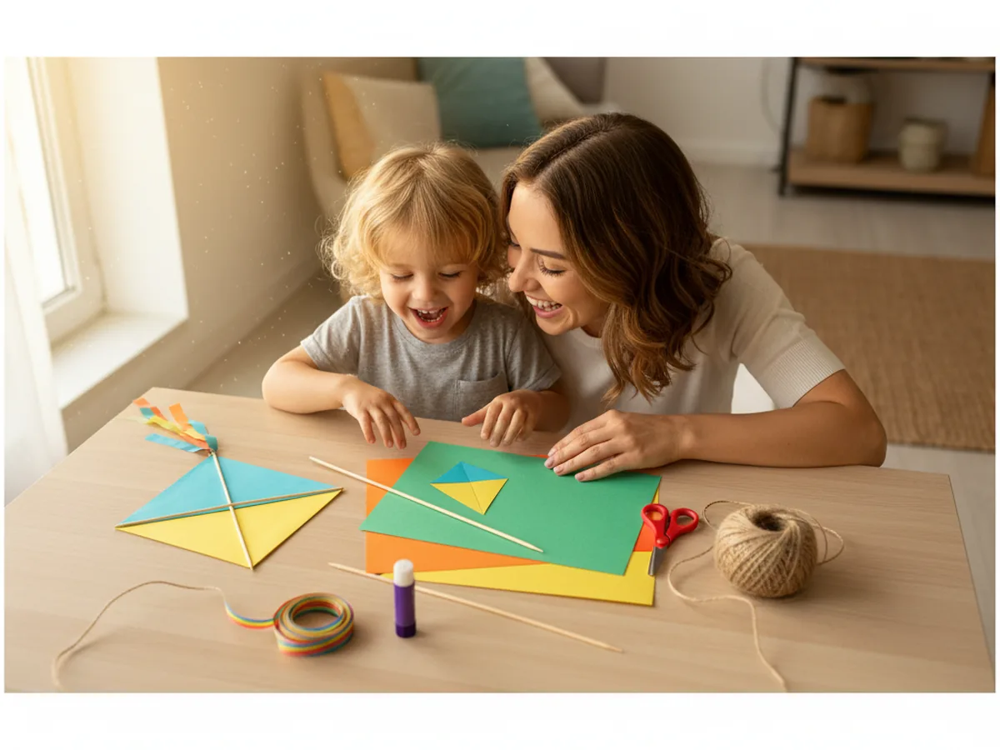
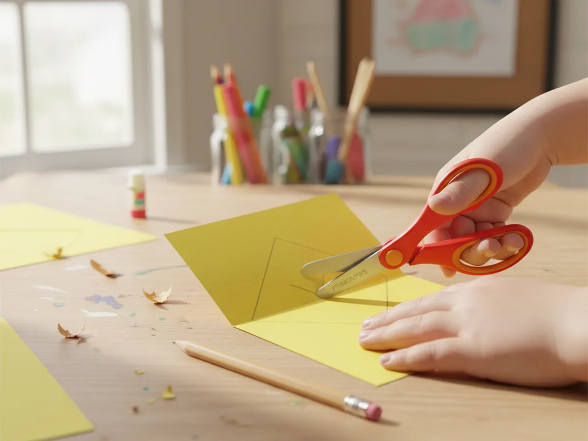
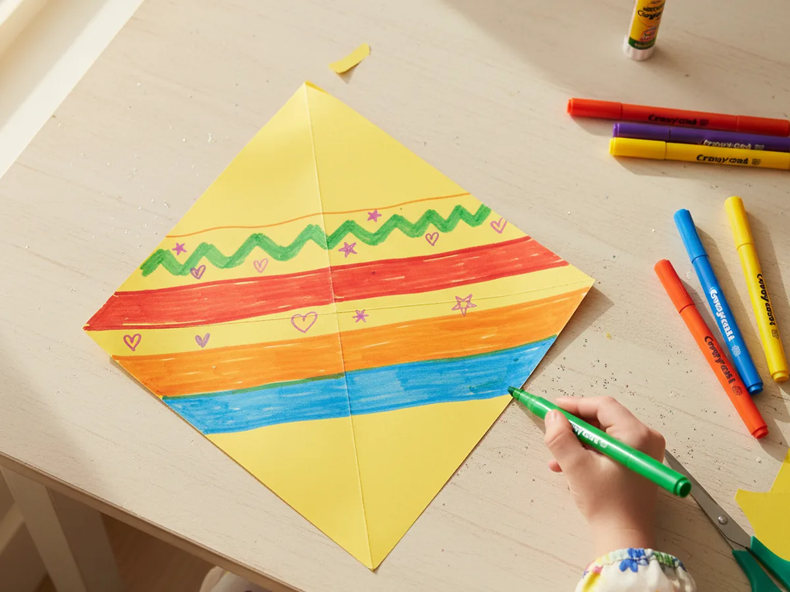
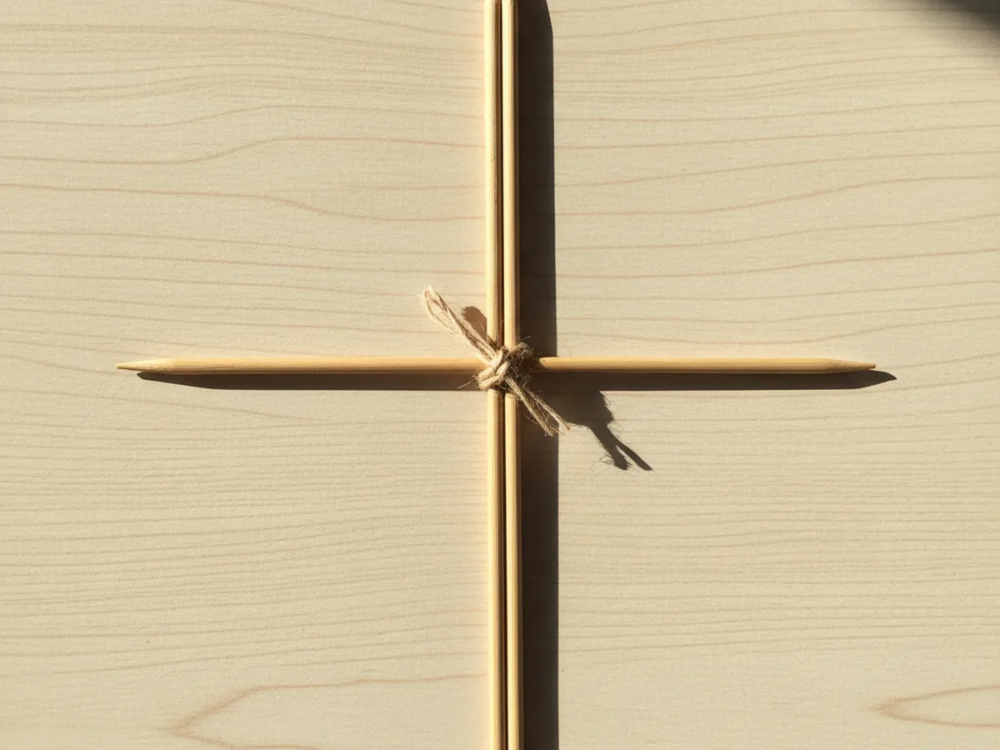
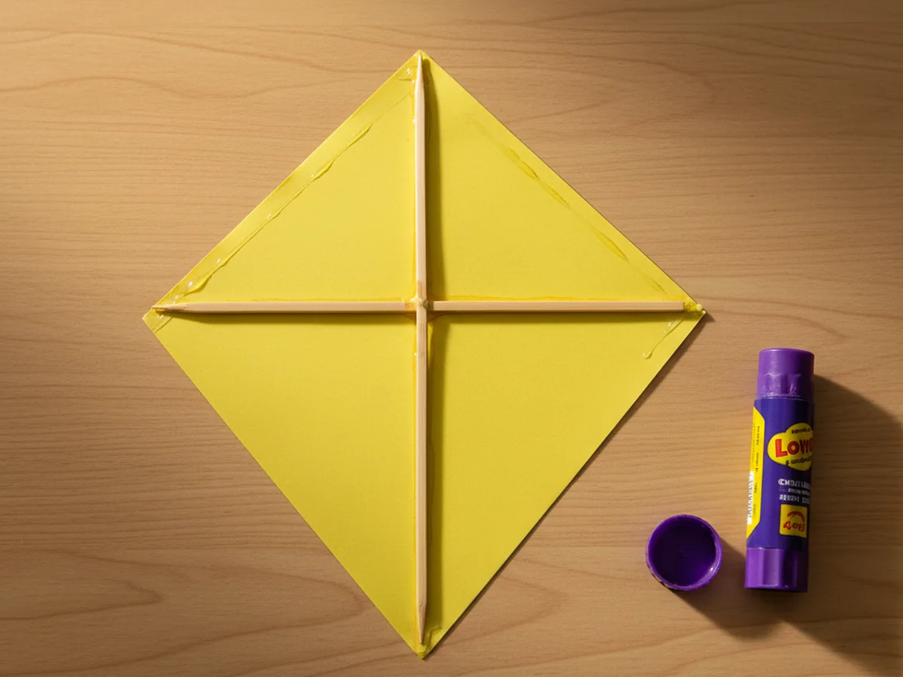
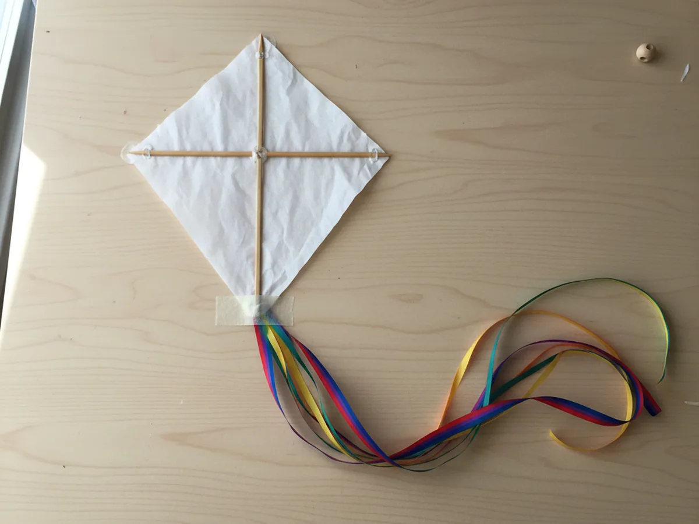
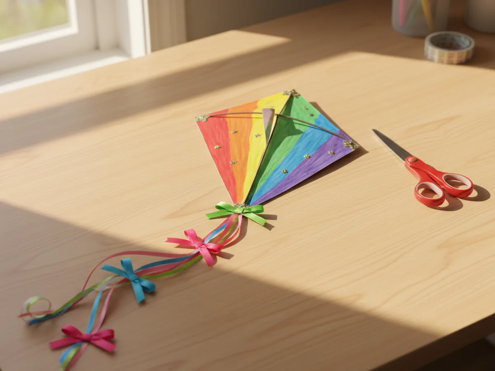
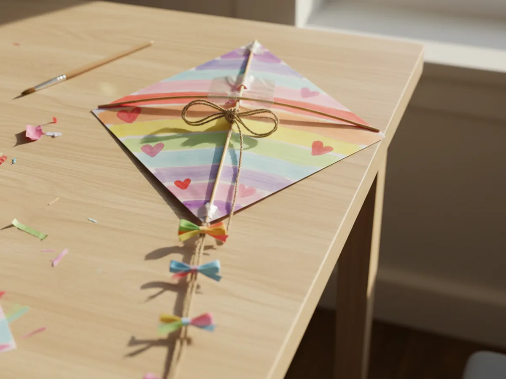
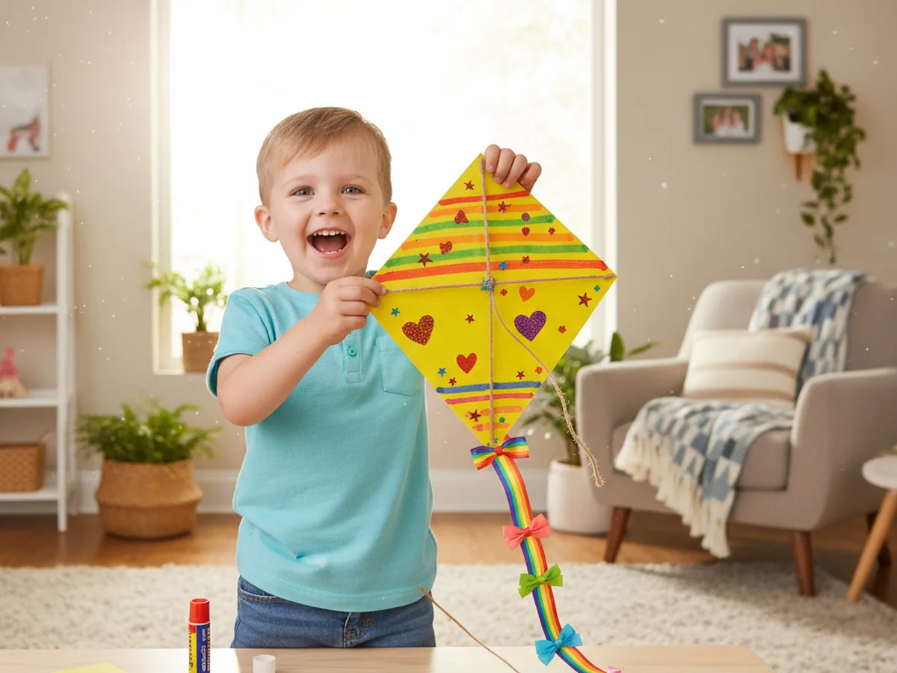

This bright kite craft paper project is one of those activities that lights up a whole afternoon. You and your child cut a colorful diamond from cardstock, decorate it any way you want, add a bamboo cross for the frame, and finish it with a long ribbon tail full of little bows. The result is a cheerful paper kite that feels playful, springy, and proud of itself, the kind of craft your child will want to march around the house showing off to everyone. 🌬️
It is a calm, low-stress activity for ages 3 and up that fits easily on a kitchen table. Toddlers can press on stickers and color the diamond, while older kids handle the cutting, the frame, and tying the tail bows. Either way, this kite craft paper turns into a sweet little keepsake that looks just as cute hanging from a doorframe as it does flying through the air on a windy afternoon walk.
Why Kids Love This Craft
Kites have a magical pull on children. There is something about a colorful diamond shape with a long swishing tail that makes a kid want to run, twirl, and shout. As soon as your child sees the kite take shape on the table, they start imagining where it will fly. Some children make up little kite names. Others want to draw their own face on the front so the kite can look at the sky too. The whole project sparks that classic, simple kind of joy that crafts are made for.
This paper kite craft is also gently good for them in real ways. Cutting the diamond shape gives them real scissor practice, the decorating step builds creativity and color choices, and tying tiny ribbon bows is a wonderful fine motor moment for older kids. Younger kids will love the texture of the curling ribbon and the satisfying press of the glue stick when the frame goes on. It feels like play, not practice.
The decorating part is where the craft really comes alive. Some kids cover their kite in rainbow stripes, others draw hearts, stars, or polka dots, and a few will write their own name across the front in giant letters. There is no wrong way to finish an easy kite craft, and that freedom is exactly what makes children feel proud of what they made together with you. 💛

What You'll Need
Here is everything you need for this kite craft paper project, and most of it is already in your craft drawer.
- Crayola Construction Paper, 240 ct, the rainbow assortment covers the kite body, decorations, and tail bows in one pack
- GoodCook 12 Inch Bamboo Skewers, 100 ct, perfect lightweight wood for the simple cross frame on the back of the kite
- Curling Ribbon Assortment, 4 Big Rolls, makes a colorful flowing tail and tiny bows in seconds
- Vivifying Natural Jute Twine, 165 ft, just enough sturdy string for the kite line your child can hold and run with
- Elmer's Disappearing Purple Glue Sticks, 4 pack, easy for little hands and dries clear so the bamboo frame stays neat on the back
- Fiskars 5 Inch Blunt-Tip Kids Scissors, safe for ages 4 and up and just right for the soft diamond cuts
- Single Hole Punch with Soft Grip Handle, makes a clean little hole for tying the kite line without tearing the paper
- Sharpie Fine Point Markers, Black, perfect for adding a smiley face, your child's name, or tiny details
- Crayola Broad Line Markers, 10 ct, optional for adding colorful stripes, hearts, or patterns on the kite face
- A piece of clear tape, optional for reinforcing the hole and the tail attachment point
Step-by-Step Instructions
Take this one calm step at a time and you will have a finished paper kite in about half an hour. Let your child help with every part, even if it is just decorating or picking the ribbon colors.
Step 1: Cut the Diamond Shape
Start by folding a sheet of cardstock in half the long way. Along the folded edge, draw half a diamond shape with a long bottom point and a shorter top point, about 10 inches tall and 4 inches wide at the widest spot. Cut along the line through both layers, then open the paper up to reveal a perfectly symmetrical diamond, about 10 inches tall and 8 inches wide. Pick any color of cardstock you like, since this is the base of the whole kite craft paper project and your child will be decorating it next.

Step 2: Decorate the Front
This is the fun part. Hand your child the markers and let them go to town on the front of the diamond. Bright stripes, big polka dots, hearts, stars, rainbows, or a giant smiling kite face all look adorable. Younger kids can press on colorful stickers or glue small paper shapes cut from scraps. The decorating is what makes this kite paper craft feel uniquely theirs, so try not to direct them too much. The wonkier and brighter, the cuter.

Step 3: Make the Cross Frame
Now make the bamboo cross. Snap one skewer down to about 9 inches long for the vertical piece and another to about 7 inches long for the horizontal piece. Lay the long skewer down first, then place the shorter one across it about one third of the way down from the top, so the cross sits a little higher than the middle. Tie the two skewers together at the crossing point with a small piece of string or yarn, wrapping it around the joint a few times before knotting it.

Step 4: Glue the Frame to the Back
Flip the decorated diamond over so the blank side is facing up. Place the bamboo cross flat on the back, with the long skewer running from the top point down to the bottom point, and the short skewer reaching across to the two side points. Run a thick line of glue along each skewer and press it down firmly onto the paper. The frame gives the kite a little bit of structure without making it heavy, so the finished kite craft paper still feels light and fluttery.

Step 5: Add the Ribbon Tail
Cut a piece of curling ribbon or yarn about 24 inches long for the tail. Tape one end firmly to the back of the kite at the very bottom point, right where the long skewer ends. Add an extra strip of clear tape over the join for strength so the tail does not pull free when your child swishes it through the air. Flip the kite back over and let the long ribbon hang freely down from the bottom point.

Step 6: Tie On the Tail Bows
Cut three or four short pieces of ribbon, about 4 inches each, in different bright colors. Tie each one in a little bow directly onto the tail ribbon, spacing them about 5 inches apart down the length. The bows look like little flutters and they are also fun for small fingers to practice tying. By the end of this step, the diamond kite craft already has that classic kite look, and your child will probably start swooshing it around the room. 🪁

Step 7: Punch a Hole and Add the Kite String
Place a small piece of clear tape on the front of the kite right over the spot where the two skewers cross. This reinforces the paper so the hole does not rip when your child pulls on the string. Use a single hole punch to make a neat hole through the tape and paper, just above the cross. Cut about 3 feet of jute twine, thread one end through the hole, and tie it in a strong double knot on the front. This becomes the kite line your child can hold and run with.

Step 8: Add the Final Details
Now hand over the black marker for the finishing touches. Your child can add a smiling face right in the middle of the kite, write their own name across the front, or draw tiny hearts, stars, clouds, and sun rays around the edges. Once the marker is dry, your kite craft paper is ready to be taken outside for a gentle test run, hung up in the bedroom, or proudly stuck on the fridge. ✨

Variations to Try
Mini Pocket Kite: Make a tiny version about 4 inches tall with no bamboo frame at all, perfect for travel days, restaurants, or quiet time in the car. Toddlers love how small and easy it is to wave around, and you can fit a whole family of mini kites in a pencil case.
Picture Frame Kite: Cut a small window in the middle of the diamond and tape a tiny photo behind it. The kite becomes a sweet keepsake of a family trip, a beach day, or a special memory, and it looks adorable hanging on a wall or bedroom door instead of flying.
Stained Glass Kite: Skip the cardstock and use a sheet of tissue paper instead. Glue colorful tissue paper squares onto a paper diamond frame so light shines through. This version looks beautiful in a sunny window and is wonderful for older kids who want a more delicate craft.
Final Thoughts
A simple kite craft paper project is one of those activities that reminds you how little it takes to spark a big imagination. A diamond of paper, a bit of ribbon, and a piece of twine turn into a tiny flying adventure that your child will want to swoosh around the house for the rest of the afternoon. The real magic is that moment when they hold their kite up high, eyes shining, and ask if they can show it to everyone. That little burst of pride is exactly why we craft together. Happy crafting, mama.
More Crafts You'll Love
If your family enjoyed making this paper kite, here are two more bright and breezy crafts to try next.